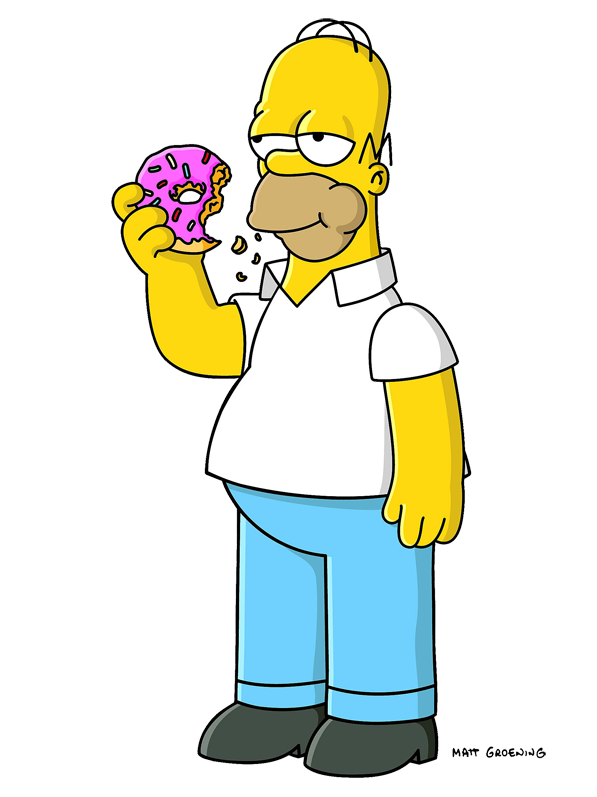

Гомер Джей Сімпсон (англ. Homer Jay Simpson) — один із головних героїв мультсеріалу «Сімпсони». Гомер — грубий і неввічливий батько родини, він має очевидні вади: товстий, лисий і не дуже розумний. Нерідко він поводиться як блазень, абсурдно, егоїстично і нетактовно, але все ж лишається симпатичним.
Гомер має трьох дітей: Барта, Лісу і Меґґі. Працює на Спрингфілдській атомній електростанції інспектором з безпеки. Гомер дуже лінивий і багато п'є.
За декілька років він перетворився на культового персонажа у США та багатьох інших країнах світу, в тому числі й в Україні.
В Україні мультсеріал транслюється на ефірному цифровому телебаченні Т2.

Творець «Сімпсонів» Мет Ґрейнінґ вигадав Гомера у 1986 році разом з іншими членами його родини та показав свої малюнки продюсеру Джеймсу Бруксу. Ідея Бруксу сподобалася. Перші серії-короткометражки на «Шоу Трейсі Ульман» почали виходити з 19 квітня 1987 року. Перша серія за участю Гомера зветься «На добраніч». Гомер — головний герой шоу, з'являється у кожному епізоді без винятку, де зазвичай відіграє в епізоді значну роль.
Мет назвав Гомера, як і решту родини, на основі імен членів своєї родини, в честь свого батька Гомера Грейнінга.
Протягом перших сезонів вигляд Гомера значно еволюціонував: удосконалювалися риси його обличчя, одяг та зовнішність. З 6-7 сезонів Гомер майже не змінюється до теперішніх серій.